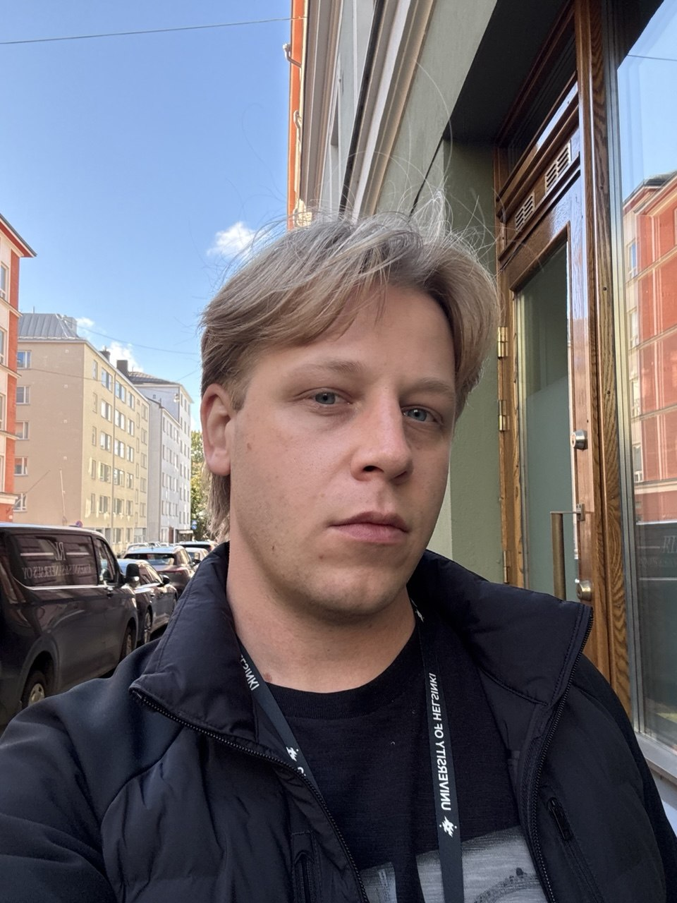

Peter Kulikov
Doctoral Researcher
University of Helsinki
Department of Mathematics and Statistics
About me
I started my PhD in January 2025. I work in the field of Inverse Problems under the supervision of Matti Lassas and Lauri Oksanen at the Department of Mathematics and Statistics, University of Helsinki.
Reach out to collaborate, email: petr [dot] kulikov [at] helsinki [dot] fi
Research interests
- PDE
- Functional analysis
- Microlocal analysis
- Inverse problems
- Spectral Theory
- Differential Geometry
Education
- Doctoral Student in MathematicsUniversity of Helsinki
- MSc (Tech) in Applied MathematicsAalto University
- MSc in MathematicsSaint Petersburg State University
Publications
An inverse spectral problem for the wave equation with a varying Robin parameter at the boundary
Antti Hannukainen, Peter Kulikov, Matti Lassas and Lauri Oksanen. arXiv preprint, 2026.
Bounded symbols of Toeplitz operators on Paley-Wiener spaces and a weak factorization theorem
Peter Kulikov. arXiv preprint, 2025.
Recent & Upcoming Talks
- Inverse Days 2026, University of Jyväskylä, Finland, 14–17 December 2026. 25-minute talk based on arXiv:2610.13629.
Education
Doctoral Student in Mathematics
Jan 2025 – presentUniversity of Helsinki · Helsinki, Finland
Doctoral Programme in Science, Department of Mathematics and Statistics.
Supervisors: Matti Lassas, Ph.D., University of Helsinki (matti.lassas@helsinki.fi); Lauri Oksanen, Ph.D., University of Helsinki (lauri.oksanen@helsinki.fi).
MSc (Tech) in Applied Mathematics
Aug 2023 – Nov 2026Aalto University · Espoo, Finland
GPA 5.0/5.0 · Completed with honours.
Programme: Mathematics and Operations Research.
Master’s thesis: An inverse spectral problem for the wave equation with a varying Robin parameter at the boundary.
Supervisor: A. Hannukainen, D.Sc. (Tech.), Aalto University (antti.hannukainen@aalto.fi).
Reviewer: L. Oksanen, Ph.D., University of Helsinki (lauri.oksanen@helsinki.fi).
MSc in Mathematics
Aug 2021 – Jul 2023Saint Petersburg State University · Saint Petersburg, Russia
GPA 4.86/5.0 · Graduated with distinction.
Programme: Advanced Mathematics.
Master’s thesis: Duality Approach to the Regularity Problems for the Navier–Stokes Equations. Defended with first-class honours.
Supervisor: T. Shilkin, Ph.D., St. Petersburg Department of the V. A. Steklov Mathematical Institute (shilkin@pdmi.ras.ru).
Reviewer: G. Seregin, Ph.D., Emeritus Professor, University of Oxford (seregin@maths.ox.ac.uk).
BSc in Mathematics
Aug 2017 – Jul 2021Saint Petersburg State University · Saint Petersburg, Russia
GPA 4.21/5.0
Programme: Mathematics.
Bachelor’s thesis: Toeplitz Operators on the Paley–Wiener Space. Defended with first-class honours.
Supervisor: R. V. Bessonov, Ph.D., Saint Petersburg State University (bessonov@pdmi.ras.ru).
Reviewer: E. Fricain, Ph.D., Laboratoire Paul Painlevé, Université de Lille (fricain@math.univ-lyon1.fr).
Latest notes
All notes →

Skills
- Python
- C/C++
- Wolfram Mathematica
Languages
- English
- C1
- Finnish
- A2
- Russian
- Native
- Toki Pona
- as a hobby